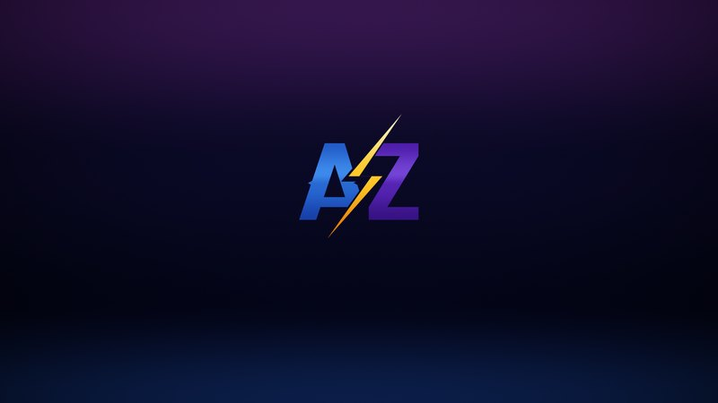
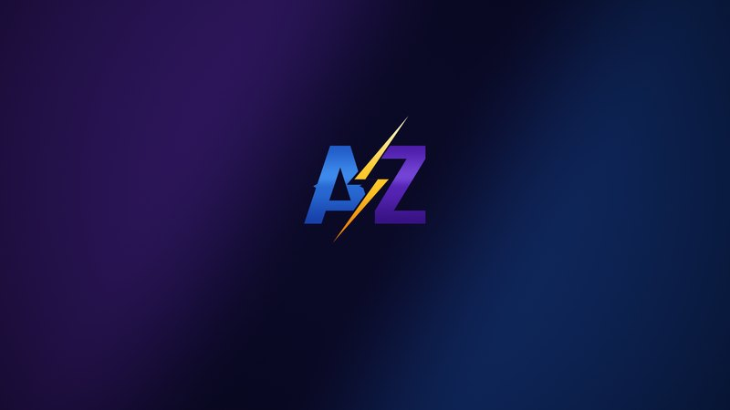

تعريفات حديثة وقديمة لكرتك، Clean Install، بروفايل لو لاتنسي عبر Profile Inspector، بروفايل لكل لعبة، و P0.
عزيز أوبتمايزر قيمنق
AZIZ Gaming Optimizer · تطبيق ويندوز مجاني للاعبين
AZIZ / ONE CLICK
ضغطة وحدة، وجهازك جاهز للألعاب
اختر Ultra Low Latency أو Low Latency والتطبيق يضبط ويندوز والخدمات والشبكة والتعريفات مرة وحدة: لو لاتنسي أقل، فريمات أثبت، رام أخف، وعمليات خلفية أقل بكثير. كل خيار يقرأ حالته الحقيقية من ويندوز، وكل تغيير ينحفظ أصله عشان ترجع له.
1.9.7AZIZ GAMING OPTIMIZER · LATEST
⬇ تحميل التطبيق
بلاي بوك AME Wizard
ZIP · 39 MB · ويندوز 10 / 11 · بدون تثبيت
RAM1.6–2.5 GBاستهلاك الرام بعد Optimize
PROCESSES40–60عملية بالخلفية بدل 150+ في ويندوز الافتراضي
ONE CLICK2بروفايل جاهز: Ultra Low Latency و Low Latency
CONTROLS140+خيار ويندوز وتعريفات بحالة حية
أرقام الرام والعمليات من جهاز الاختبار بعد Optimize وإعادة التشغيل، وتختلف حسب الجهاز والبرامج المثبتة.
Optimize والبروفايلات
Optimize your PC for Gaming
تختار الوضع وتبدأ فوراً: التويكات، الخدمات، الشبكة، الحماية، ملف ريجستري عزيز، التنظيف، وضع MSI لكرت الشاشة، وخلفية عزيز بدقة شاشتك. كل شي ينكتب في History.
Ultra Low Latency و Low Latency
بروفايلات ثابتة: Ultra لأقل لاتنسي (تايمر 0.5ms و CPU Latency Tolerance)، و Low Latency للاستخدام اليومي مع توفير الطاقة العادي.
بروفايلاتك الخاصة
غيّر اللي تبي واحفظه باسمك، صدّر واستورد. عند التشغيل يسألك تحتفظ بالتغييرات أو ترجع للبروفايل، و Windows Default يرجعك لقيم جهازك الأصلية.
حالة حقيقية لكل خيار
زر ⓘ يعرض: قيمة جهازك الأصلية ← الحالة الآن ← قيمة البروفايل، مع كل قيمة ريجستري وهل هي شغالة أو طافية. الخيار الناقص يبان Mixed مع السبب.
ويندوز والخدمات
Toggles و Tweaks
تحديثات ويندوز، التليمتري، الإشعارات، Copilot، البحث، Hibernation، Core Parking، HPET، Dynamic Tick، تويكات المعالج والكرت، وغيرها. مقسمة بفئات تنطوي وترتيب تسحبه بنفسك.
الخدمات
الخدمات المهمة ظاهرة والباقي مطوي. Recommended يطفي البلوتوث والواي فاي والوايرلس والاتصال البعيد و Phone Link والفهرسة و BitLocker، و Minimal لأقل عدد خدمات.
الشبكة
Nagle، Auto-Tuning، Interrupt Moderation، LSO، QoS وغيرها، تتطبق فوراً بإعادة تشغيل كرت الشبكة بدون ريستارت.
الحماية والفيرتوالايزيشن
Hyper-V و VBS و Core Isolation و BitLocker وغيرها من مكان واحد، مع توصيات عزيز للألعاب.
الأداء أثناء اللعب
منظف الرام جديد
ضغطة على وعاء الرام تنظف الذاكرة (Working Sets و Standby) بدون ديفراق. وبعدها ينظف تلقائياً بالخلفية لما يوصل الاستهلاك 80٪ وكل ساعة، حتى والتطبيق مقفل.
Competitive Mode
أنوية يدوية تتطبق على اللانشر قبل اللعبة، إيقاف خدمات مؤقت، وتنظيف Standby مع بداية كل لعبة، وكله يرجع بعد ما تقفلها.
NoSteamWebHelper جديد
يوقف Steam Web Helper وقت اللعب، يشتغل من الـ Tray ويبدأ مع ويندوز، وتختار مكان تثبيته.
DX11 Fullscreen جديد
تعطيل Fullscreen Optimizations لكل لعبة DirectX 11 وأقدم لحالها.
الأدوات
يفعّل MSI لكرت الشاشة الأساسي، ومع معالج AMD يعطيه أولوية High ومعالج مخصص.
يفحص ويندوز ويعرض الموجود فعلاً: تطبيقات، خدمات، مهام وإعدادات خصوصية، مع حذف Edge و WebView2.
حذف عميق يشيل البقايا، أو حذف عادي، باختيار واحد بدون رسائل.
يمسح كاش الشيدر لـ DirectX و NVIDIA و AMD، وتنظيف القرص بفئات تختارها.
يطلب 0.5ms ويقيس دقة تايمر ويندوز الحقيقية.
استيراد خطط الطاقة وإدارتها، وحذف الخطط المستوردة.
يقرأ جهازك ويفتح صفحة موديلك بالضبط، وتثبيت الشبست بضغطة.
نقطة استعادة تلقائية قبل أول تغيير، واستعادة حقيقية تختار فيها النقطة.
خلفيات عزيز جديد

Horizon الرسمية⬇ تحميل 4K


Split⬇ تحميل 4K

Horizon هي الخلفية الرسمية، و Optimize يحطها تلقائياً بدقة شاشتك بالضبط. Split متاحة من الإعدادات. الملفات بدقة 4K وتنضبط على أي شاشة.
طريقة التشغيل
- حمّل الملف وفك الضغط كامل في مجلد، مثل سطح المكتب.
- شغّل AZIZGamingOptimizer.exe واختر «نعم» لصلاحية المسؤول.
- اضغط Optimize واختر Ultra Low Latency أو Low Latency، وبعدها سوّ ريستارت.
بصمة SHA-256:
0e319324139724b2e2e997bb3e879dff74cb774027962cc87c53767f00cab744المتطلبات: ويندوز 10 أو 11 (64-bit) · .NET Framework 4.8 · صلاحية مسؤول.
AZIZ Gaming Optimizer — free Windows gaming optimizer
One click tunes Windows for games: pick Ultra Low Latency or Low Latency and AZIZ sets tweaks, services, network, security, registry and debloat in one go. Typical results on our test PC: RAM use 1.6–2.5 GB and 40–60 background processes instead of 150+. Live state for 140+ controls, custom profiles, a RAM cleaner with automatic background cleaning, competitive mode, NVIDIA driver tools, shader cache cleaner, timer resolution test and the AZIZ Backup restore point. Windows 10 / 11, x64, free.
ARCHIVE
أرشيف الإصدارات
التحميل متاح لأحدث نسخة فقط. هذا سجل تطور عزيز أوبتمايزر قيمنق:
- 1.9.7 (الحالية) · Optimize بوضعين Ultra Low Latency و Low Latency بضغطة · شعار وهوية جديدة · منظف رام تلقائي · قراءة حالة دقيقة لكل خيار مع التفاصيل · خدمات Recommended محدّثة · NoSteamWebHelper · DX11 Fullscreen · خلفيات عزيز · Scan & Debloat جديد · إلغاء تثبيت عميق.
- 1.9.6 · بروفايلات Windows Default و Ultra Low Latency · زر Optimize your PC for Gaming · خدمات Minimal / Recommended / Default · قراءات مباشرة واستهلاك أقل · Scan & Debloat · نقطة استعادة AZIZ Backup.
- 1.9.5 · شعار جديد · تنقل فوري بين التابات · Recommended و Minimal للخدمات.
- 1.9.4 · Deep Sleep · تطبيق التغييرات بالتوازي · Windows Default بقيم جهازك · Deep Debloat للمكونات.
- 1.9.3 · شعار AZ والبرق · Ultra Low Latency · البروفايلات مع Export و Import · Competitive Mode.
- 1.9.0 · الموقع الرسمي وأول إصدار عام.